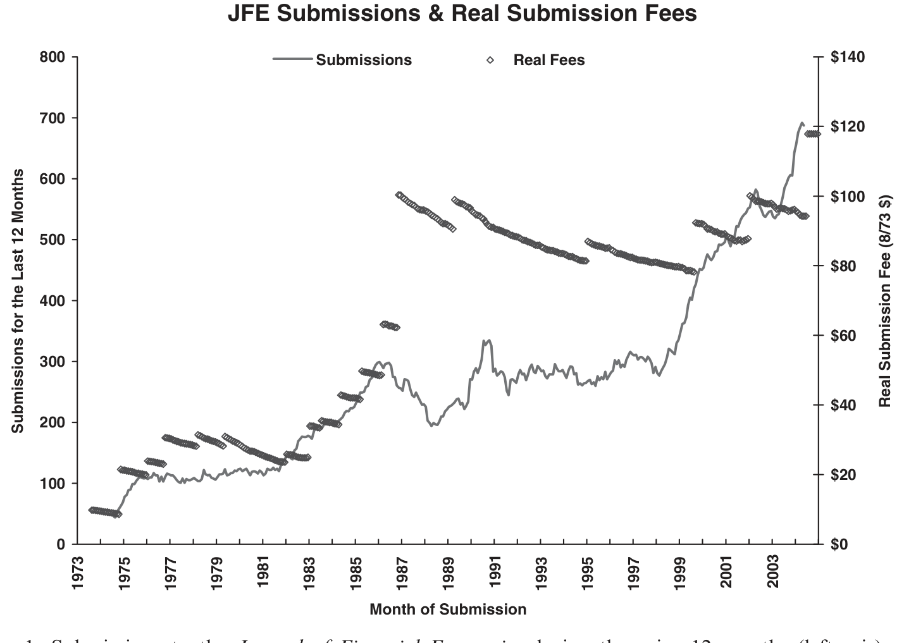
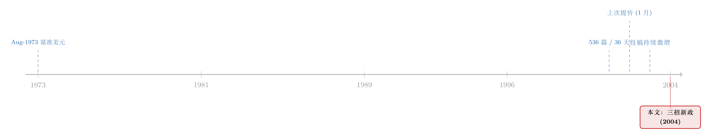

一封涨价通知里的微观经济学：当一本顶刊开始给「投稿」定价
本文读的是 Schwert (2004, Journal of Financial Economics)——这不是一篇带回归的论文，而是 JFE 主编写给作者们的一封「政策通知」。但通知背后是一套地道的价格理论：面对在三年里暴涨 25% 的投稿量、被挤到极限的审稿资源，主编没有去排更长的队，而是同时拧动三个旋钮——提高投稿费、加一道「桌拒」式的两阶段评审、把投稿全面电子化——用价格和筛选去管理一个正在「堵车」的公共品。
1 引言：一本期刊，其实是一个会「堵车」的市场
先抛一个看似不起眼的问题：一本顶级期刊，凭什么要向投稿人收钱？
在很多人的朴素印象里，学术是清高的、是不谈钱的。可如果你把一本期刊拆开来看，会发现它其实是一个微缩的市场：一边是源源不断、想要发表的作者（需求），另一边是稀缺到极点的审稿人和编辑的时间（供给）。一旦需求暴涨而供给几乎固定，结果只有两个——要么排起越来越长的队（周转时间 (turnaround time) 拉长），要么有人出来「管」这个市场。
这封信的作者、JFE 主编 G. William Schwert，选择了后者。而且他管市场的方式，几乎是把一本《公司金融》教科书的前几章直接搬到了现实里：给拥堵定价。
这类「编辑手记」其实是一个被严重低估的文体——它把一本期刊当成一个组织、一个市场来运营，里面藏着真实的机制设计。本博客读过好几封：RFS 主编那封没有数据的「论文」、RFS 主编上任一年的「年终报告」、以及 JFE 给每篇文章发「身份证」的那一纸通告。这一封，是其中最像「经济学」的一封。
2 先看「堵车」的证据：工作量「爆炸」了
任何一项加价，都要先讲清楚「为什么不得不加」。Schwert 给出的，是一组很硬的数字。
上一次 JFE 调整投稿费，是在 2002 年 1 月。从那以后，美国消费者价格指数 (Consumer Price Index, CPI) 涨了超过 6%——也就是说，就算什么都不做，原来的费用按实际购买力算也已经缩水了。但更要命的不是通胀，而是投稿量：相比 2002 年初，投稿增长了大约 25%。
把镜头拉近：截至 2004 年 5 月底，JFE 在过去 12 个月里处理完了 680 篇稿件，手上还压着 122 篇在审，合计 802 篇；中位数周转时间 37 天。而 2002 年 1 月的同口径数字是：处理完 536 篇、在审 122 篇、合计 658 篇，2001 年的中位周转时间 36 天。
看出蹊跷了吗？两年里总工作量从 658 涨到 802，周转时间却几乎纹丝不动，只从 36 天挪到 37 天。这不是运气，这是一个一直在用激励维持运转的系统，被推到了临界点上。Schwert 自己的话是：「we are doing a lot more work.」
接着，一个自然的问题是：既然系统还撑得住，为什么非动不可？答案藏在那张被反转过来的图里——投稿量一路向上，而按 1973 年 8 月美元计的实际投稿费，却在一路向下。

Figure 1: Submissions to the Journal of Financial Economics during the prior 12 months (left-axis) and
如图 1 所示，左轴的投稿量逐年攀升，右轴用 August 1973 dollars 表示的实际投稿费却被通胀慢慢侵蚀。需求在涨、价格（实际值）在跌——这是任何一个市场都会「排长队」的经典配方。于是涨价不再是「想不想」的问题，而是「不加就要堵死」的问题。
3 第一招：给「投稿」这个动作装一个价格
于是第一个旋钮被拧动了。2004 年 7 月 1 日之后，投稿费改为：订阅者 $500，非订阅者 $550。Schwert 明确说，这相当于给订阅者的实际投稿费上调了 18%。与此同时，他还提高了付给「按时交报告」的审稿人的报酬——因为在他眼里，审稿人提供的服务，是整本期刊最稀缺的资源。
这一加一减，是一个非常漂亮的价格理论动作，值得拆开看。
它在向谁收费？收的不是「发表费」，而是「投稿费」——你只要按下提交键就要付。为什么？因为每一次投稿，都会占用审稿人和编辑的时间，让别人的稿子排得更久。用经济学的话讲，一次投稿对其他作者施加了一个拥堵外部性 (congestion externality)。投稿费的作用，正是把这个外部成本「内部化」，逼每位作者在按键之前先掂量一下：我这篇，真的值得占用别人的时间吗？这本质上是一个庇古式 (Pigouvian) 的拥堵收费。
它顺便还在筛选。一个对自己论文有信心的作者，$500 不算什么——录用后最后一次投稿的费用还会退还；可一个连自己都觉得「碰碰运气」的作者，这笔钱就成了一道门槛。价格在这里悄悄完成了一次自我筛选 (self-selection)：让边际上最没把握的那批投稿知难而退。
而提高审稿人报酬，是在给供给侧加价。稀缺资源涨价、需求侧也涨价，一进一出，正是要把那条快要被压垮的周转时间曲线继续摁在 37 天上。
注意 Schwert 那句点睛的话：「Since its inception, the JFE has prided itself on using economic incentives to help manage the business of the Journal.」——把期刊当成一门生意来经营、用经济激励来调度资源，这是 JFE 的传统，也是这封信全部三招的底层逻辑。
4 但真正关键的一步：两阶段评审与那「不退的 $100」
如果故事到涨价就结束了，那它不过是一则普通的通胀调整。真正关键的一步在于第二招。
Schwert 观察到一个价格解决不了的问题：即便有了高投稿费、又有着很高的拒稿率 (rejection rate)，期刊仍然收到太多「要么做得粗糙、要么不大可能让足够多 JFE 读者感兴趣」的稿子。换句话说，价格筛掉了「没信心」的人，却筛不掉「有信心、但选题不够分量」的人。
于是反转出现了——他引入了两阶段评审 (two-stage review process)：
所有投稿先由主编亲自过一遍，判断「即便作者的结论全对，这个选题是否有足够宽的意义、值得登在 JFE 上」。如果不够，主编就发一封快速退稿信，退还除
$100以外的全部投稿费；作者拿不到任何审稿报告，也没有申诉权 (no right of appeal)。
这一步的精妙，全在那「不退的 $100」和「退掉的其余部分」之间。
为什么退掉大头？因为这类稿子没有消耗审稿人的劳动——既然没动用最稀缺的资源，就没理由把钱全扣下。
为什么还要留 $100？因为它消耗了主编的判断。这 $100，就是为「编辑读一遍、并给出一个『够不够格』信号」所定的价。
而这一招真正想省下的，是 Schwert 反复强调的那种最昂贵、又最没用的产出——一份只会写着「this paper is OK, but just not interesting/broad enough for the JFE」的审稿报告。用他的原话：这种结果对作者、审稿人、编辑三方都昂贵，而作者从中得到的反馈，几乎不会让论文变好多少。
把这层逻辑摊开，你会发现两阶段评审几乎是一个帕累托改进 (Pareto improvement)： - 对作者，快、且退掉大部分钱，比苦等三个月换来一句「不够 broad」要好； - 对审稿人，省下了一份注定无效的报告； - 对编辑，用一道前置的「桌拒」(desk rejection)，把最稀缺的审稿资源留给真正值得评审的稿子。
当然，「没有申诉权」是这套机制里最锋利的一面。它把巨大的、不受约束的自由裁量权交到了一个人手里——这既是效率的来源，也是它最容易被质疑的地方。后文的 Q&A 会专门掰扯这一点。
5 第三招：电子提交，把「交易成本」也一并拧掉
第三个旋钮相对低调，却同样是冲着「效率」去的：把电子版的 Microsoft Word 或 Adobe PDF 文档，定为标准投稿方式。
这里有一个容易被忽略的细节：JFE 一直采用双盲评审 (double-blind review)——作者和审稿人互不知道对方是谁。所以电子化不是简单地「发个邮件」，期刊网页上专门提供了如何把文档处理成隐去作者身份的说明。实在做不出合规电子文档的作者，还有退路：额外付 $50 寄四份纸质稿，或者通过 SSRN 提交已公开的工作论文。
Schwert 的算盘是：电子提交能减少那些「因审稿人出差、收不到转寄的邮件或 Fed Ex 包裹」而产生的延误。过去几年，JFE 的决定信和审稿报告早就全部电子化送达，而他「几乎没听到什么抱怨」。说白了，这一招拧的是交易成本 (transaction cost)——它不改变谁该被拒、谁该被收，只是让信息流动得更快、更少卡壳。
至此，三招连成一气：投稿费管需求侧的拥堵，审稿人加薪托住供给侧，两阶段评审用筛选省下稀缺劳动，电子提交抹平摩擦。一封看似行政性的通知，其实是一套相当完整的市场设计。
6 文献脉络：一封信，站在「编辑手记」这条小小的传统上
把这封信放回它的语境，你会发现它并不孤独。它属于一个安静却悠久的传统：主编用一纸通告，公开地调整一本期刊的运行规则，并把背后的理由讲给作者听。
早些年，这类文字更多是程序性的——比如 JFE 后来给每篇文章配上 DOI 与文章编号、终结「页码」这套旧坐标系（见《页码消失的那一天》），或是主编出面为一桩学术优先权争议做「结案陈词」。它们关心的是「怎么把期刊这台机器开得更规整」。

而 Schwert 这一封，气质明显不同：它不谈格式、不谈署名，它谈价格、稀缺与激励。它把同行评审 (peer review) 这件事，第一次摆明了当成一个资源配置问题来处理。沿着这条线再往后看，隔壁 RFS 的主编们也写过类似的「自述」——有的是一封没有数据却被当成「论文」收录的文字，有的是上任一年后交出的「年终报告」。把它们排在一起读，你会读到一个有意思的演变：期刊的自我治理，正越来越像在做经济学。这封 2004 年的信，恰好是这条脉络上「最经济学」的一个节点。
7 评论与延伸（Q&A + 研究方向）
(a) 几个可能的疑问
Q：投稿费到底是「拥堵收费」还是「筛选信号」，两者有区别吗？
有，而且区别很重要。作为拥堵收费，它对所有人一视同仁地内部化外部成本，目标是降低总投稿量；作为筛选信号，它寄望于「好论文的作者更愿意付费」，目标是改善投稿的平均质量。但这里有个隐患：投稿费是定额的，对一位手握重磅论文的资深教授和一位预算紧张的博士生是同一个数。它筛掉的可能不是「质量低」，而是「支付能力低」——这恰恰是费用机制最该被审视的地方。
Q：那为什么还要在收费之上，再加一道两阶段评审？价格不够吗？
因为价格筛的是信心/支付意愿，筛不掉选题宽度。一篇执行得很扎实、作者也很有把握、因而很乐意付费的论文，完全可能只是「OK 但不够 broad」。价格对这类稿子无能为力，只有编辑的前置判断（桌拒）能拦下它。两招针对的是两种完全不同的「过度投稿」，所以并不冗余。
Q：「退还除 $100 外全部费用」这个设计，凭什么是 $100 而不是 $0 或全额？
因为这
$100对应的是真实被消耗的资源——主编读稿并给出判断的时间。退还其余部分，是因为桌拒没有动用审稿人。这个拆分非常干净：你为消耗掉的那部分劳动付费，没消耗的部分拿回。它几乎是把「投稿费」明码标价地拆成了「编辑筛选费 + 审稿期权费」两段。
Q：「没有申诉权」会不会太霸道？这套机制的最大风险在哪？
这是全篇最锋利、也最值得担心的一处。两阶段评审把「什么选题足够 broad」的判断，集中到了主编一个人、且不可申诉。它的效率正来自这种集中，但风险也来自这种集中：选题品味的偏差、对新领域/非主流方法的系统性低估，都会被这道无监督的闸门放大，而且不留痕迹——被桌拒的论文不会进入任何统计。效率与「守门人风险」在这里是一枚硬币的两面。
Q：周转时间两年里只从 36 天升到 37 天，这是不是说明系统其实没那么紧张？
恰恰相反。在总工作量从 658 涨到 802（约
+22%）的同时把周转时间摁住，本身就是激励系统在满负荷下苦撑的证据，而不是宽裕的证据。Schwert 加价、给审稿人加薪、再加桌拒，正是因为他判断这条「平稳」的曲线已经到了不再继续投入就要断裂的临界点。中位数的平稳，掩盖的可能是尾部（最难处理的稿子）正在恶化。
Q：把投稿费提上去，会不会反而把「好论文」也吓跑、肥了不收费的竞争对手？
这正是定额费用的潜在副作用：它对预算约束紧的作者（博士生、资源少的机构）威慑最大，而这些人里未必没有好论文。理论上，一篇真正的好稿，其期望发表收益远高于
$500，不该被吓退；但现实中流动性约束是存在的。这也是为什么「订阅者 $500 / 非订阅者 $550」的价差耐人寻味——它在用价格温柔地激励机构订阅，把投稿费和订阅决策捆在了一起。
(b) 几个可能的研究问题与提案
1. 桌拒制度，到底改善了质量还是抬高了门槛偏见？ 【经济故事】两阶段评审把巨大的、不可申诉的裁量权交给主编。它若真能省下无效审稿，是效率改进；但若系统性地误杀了新方法、跨领域、或非主流作者的论文，则是一道隐形的品味闸门。两种可能性在「平均周转时间」上都看不出来。 【可行性】中。需要某本期刊在某个时点引入桌拒的前后对比，配合该刊作者构成、后续被引、以及被桌拒论文最终在何处发表的追踪数据（可借助 OpenAlex / Web of Science 匹配）。识别上可用引入桌拒制度作为一次准自然实验，比较改革前后被「快速退稿」群体与被送审群体的下游产出，难点是被桌拒论文的可观测性——它们往往不留公开记录。
2. 定额投稿费的「分配后果」：谁被价格挡在了门外？ 【经济故事】定额费用对资深、富裕机构的作者近乎无感，对预算紧张的博士生却是真门槛。一次提价，可能在不改变平均质量的同时，悄悄改变了投稿人的构成。这是一个被「平均拒稿率」完全掩盖的分配问题。 【可行性】中。利用一次明确的投稿费上调（如本文的 2004 年 7 月），以作者资历/机构资源分层，看提价后不同群体的投稿强度变化（DiD，控制领域与时间趋势）。数据可从期刊投稿系统（若能获得）或以发表论文的作者画像近似。诚实地说，投稿端的微观数据极难拿到，这是主要障碍。
3. 把「拥堵定价」从期刊搬到 OTC 与做市市场。 【经济故事】本文的核心洞察——对一个会拥堵的稀缺资源收费——并不专属于学术出版。在公司债等做市商市场里，交易商的资产负债表和注意力同样是会「堵车」的稀缺资源。一个自然的类比是：当某类报价请求挤占了做市商处理其他订单的能力，是否也存在一种隐性的「拥堵价」体现在买卖价差里？（关于稀缺的做市能力如何反映进价格，可参见《全世界最大的市场，做市商却从不靠「改价」管库存》与《无风险市场里的风险厌恶》。） 【可行性】中到高。TRACE 的公司债成交数据、以及交易商层面的库存代理变量是现成的；把「拥堵」操作化为做市商在高负荷时段的报价宽度变化，识别上可借助流动性冲击或交易商资产负债表约束的外生变动。难在干净地分离「拥堵」与「风险」两种价差成分。
4. 审稿人「按时加薪」真的买来了更快的报告吗？ 【经济故事】本文同时提高了对按时交报告审稿人的报酬，把供给侧也明码标价。但金钱激励对学术审稿这种声誉/利他驱动的劳动，效果存疑——它可能挤入 (crowd-in) 更多努力，也可能挤出 (crowd-out) 内在动机。 【可行性】低到中。理想上需要审稿人层面的报酬与交付时点微观数据，外加报酬变动的外生性。这类数据几乎只存在于期刊内部，公开复制极难；除非某期刊愿意开放或做一次随机化的审稿激励实验。
参考文献
- Schwert, G. W. (2004). An Increase in Submission Fees, a New Two-Stage Review Process, and Electronic Submissions (Editorial). Journal of Financial Economics.
评述者的判断。这封信的贡献，不在数据、也不在模型，而在它示范了一种把期刊当作经济体来治理的清醒：拥堵就定价、稀缺就加薪、无效劳动就用筛选省掉、摩擦就用电子化抹平。三招各有所指、彼此不冗余，逻辑严丝合缝。但它最大的代价，是把「什么选题足够 broad」这一最主观的判断，集中到一个不可申诉的守门人手里——效率与偏见在此同源。我最想看到的后续，是有人真正去量一量：那道「桌拒」的闸门背后，被快速退掉的论文最终去了哪里、表现如何——因为只有把这群「沉默的样本」找回来，我们才知道这套优雅的机制，究竟是省下了无效的劳动，还是顺手关掉了一些本该被打开的门。